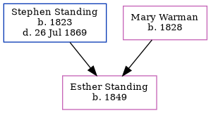

Esther Hannah Standing 1849 -
[ Home ] | [ Calendar ] | [ Surnames Index ] | [ Errors ] | [ Family History ]The child of Stephen Standing (a labourer) and Mary Warman, Esther Standing, the second cousin three-times-removed on the father's side of Nigel Horne, was born in Folkestone, Kent, England in 18491,2.
During her life, she was living at Fancy Street in Folkestone on 30 Mar 18513, in 18611 and on 7 Apr 18612.
Parents
- Stephen was born in 1823
- Mary Ann was born in 1828
Citations
- 1861 England Census Online publication - Provo, UT, USA: The Generations Network, Inc., 2005.Original data - Census Returns of England and Wales, 1861. Kew, Surrey, England: The National Archives of the UK (TNA): Public Record Office (PRO), 1861. Data imaged from the National (Relation to Head of House: Daughter)
- 1861 England, Wales & Scotland Census - Findmypast (was age 12 and the daughter of the head of the household)
- 1851 England, Wales & Scotland Census - Findmypast (was age 3 and the daughter of the head of the household)
Media
1861 England, Wales & Scotland Census - GBC/1861/0003620799
Family Tree
Map
Generated by ged2site. Last updated on Jul 3, 2024
Known Issues
Location for 1851 (Fancy Street, Folkestone, Kent, England) differs from mother's (Folkestone, Kent, England)
Date of residence (30 Mar 1851) differs from mother's in same year (1851)
Date of residence (1861) differs from mother's in same year (7 Apr 1861)
1861: Not living with either parent in childhood when aged 12